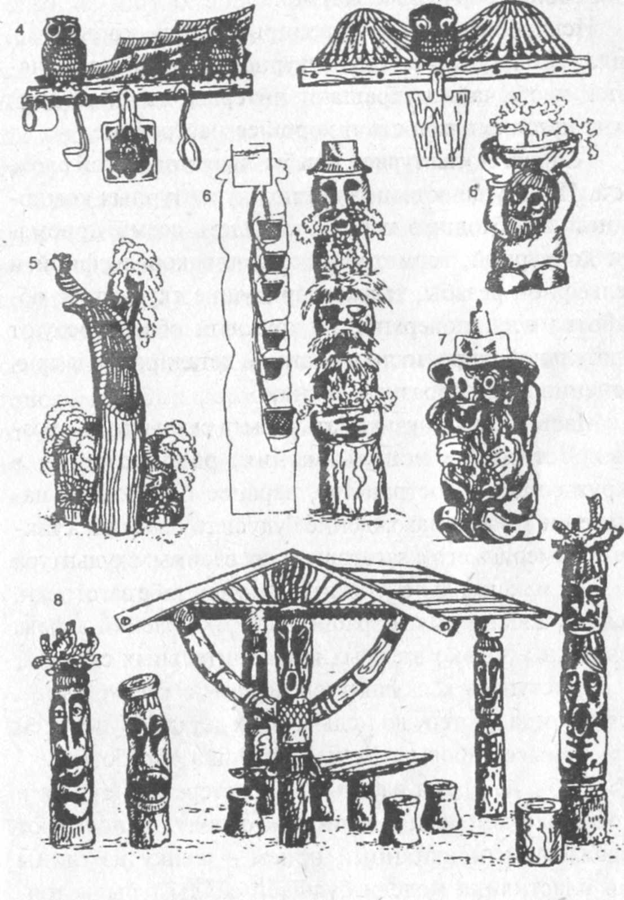
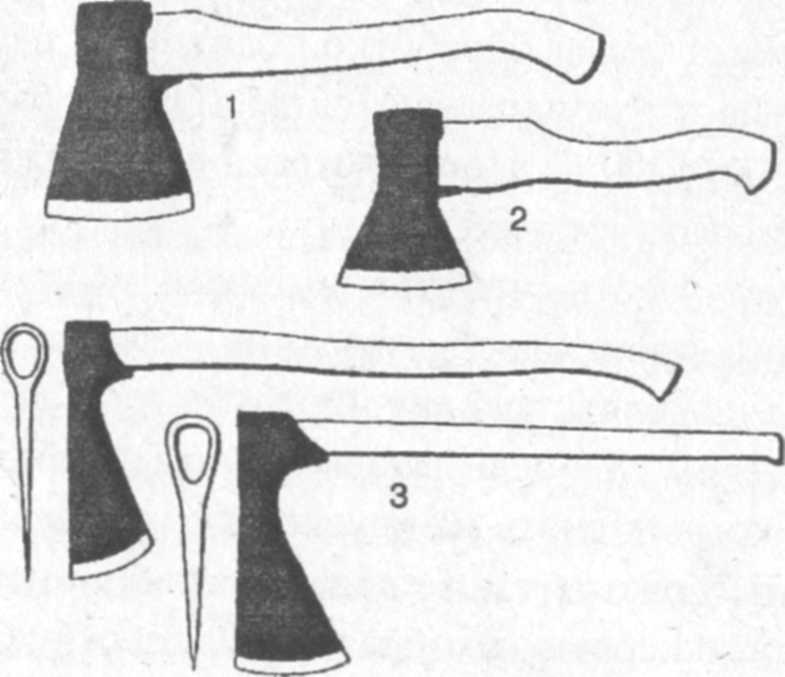
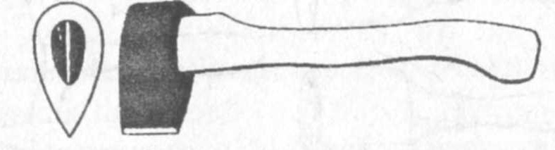
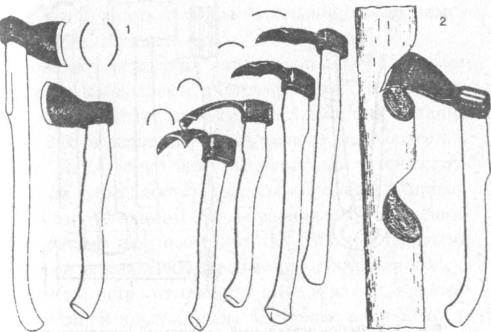

ЛАБОРАТОРНО-ПРАКТИЧНА РОБОТА
Тема: «Скульптурне різьблення»
Мета: ознайомлення зіскульптурнимрізьбленням, допоміжним інструмент і приладдям.
Матеріали та інструменти: Набір інструментів для об’ємного різьблення. Заточний і креслярський інструмент.
Порядок виконання роботи:
- Ознайомитись зі скульптурним різьбленням його особливостями.
- Ознайомитись з основним і допоміжним інструментом
Теоретичні відомості:
Скульптурне різьблення, його відмінна особливість це наявність скульптури — зображення окремих фігур (або груп фігур) людей, тварин, птахів або інших об'єктів. Фактично, є найскладнішим видом різьблення, оскільки вимагає від різьбяра об'ємного бачення фігури, почуття перспективи, збереження пропорцій. Окремим підвидом її вважається Богородське різьблення, а на Україні Лемківське різьблення – малі пластичні форми.
Виріб скульптурного різьблення є об'ємною станковою або декоративною скульптурою з дерева природного виду циліндричної форми або його розколу. Готовий різьблений виріб або скульптура є видимим з усіх боків, може мати дуже високий або зовсім низький рельєф. У цій техніці виконують і маленьку дитячу дерев'яну іграшку, і велику — вище за людський зріст — станкову або декоративну скульптуру (мал. 74).
Різьбляр може прикрасити свою ділянку декоративними утилітарними скульптурами. Майстерно зроблені сувеніри, меблі, коренепластика у поєднанні зі скульптурним різьбленням доповнюють і незвичайно прикрашають інтер'єр будинку,

Мал.74. Скульптурне різьблення:
1 — оформлення входу, 2 — вішалка для інвентарю; 3 — декоративна скульптура «Гном»

Мал. 75. (закінчення). Скульптурне різьблення:
4 — кухонні полиці; 5 — квітник «Павич»; 6 — декоративні скульптури (кашпо); 7 - свічник; 8 - альтанка-навіс з декоративними скульптурами
створюють затишок, приносять радість і гарний настрій, дає необмежені можливості для втілення творчих задумів.
Допоміжний інструмент і приладдя. Спеціалізований інструмент
У своїй роботі різьбярі окрім основного (мал.14-16) досить часто використовують допоміжні інструменти і приладдя, з якого найнеобхіднішими є олівці різної твердості, кальки олівцева, лінійки і косинці (металеві або столярні, які зручніші), гумка, циркуль, кнопки і скріпки, копіювальний папір (для зняття копій малюнків), щітки і пензлі щетинні (для покриття виробів воском і лаком) та інші.
Для різьблення по дереву, особливо в початковій її стадії (підготовці, обрубуванню, заготовка форми скульптури, посуду або декоративного елементу прикраси вдома), застосовують спеціалізований теслярський, столярний та інший інструмент.

Мал. 76. Сокири:
1 — велика теслярська сокира; 2 — столярна; 3 — фігурна
Сокири (мал.75) — великі теслярські і малі столярні, застосовуються для чорнової обробки заготовок крупних розмірів: обрубки, виявлення форми різьбленого виробу.
Колун (мал. 76 ) — вид сокири, лезо якої має форму клину з великим кутом. Застосовується для розколу поліна начурбаки.

Мал. 77. Колун
Сокири-тесла (мал. 77) різних профілів використовують для вибору внутрішньої поверхні виробів, що мають чашоподібну форму, які-небудь поглиблення, а також в скульптурному різьбленні.

Мал. 78. Сокири-тесла:
I — для скульптурних робіт; 2 — для вибору увігнутих поверхонь
Контрольні питання:
- Охарактеризуйте скульптурне різьблення його особливості
- Дайте характеристику інструменту для виконання об’ємного різьблення.